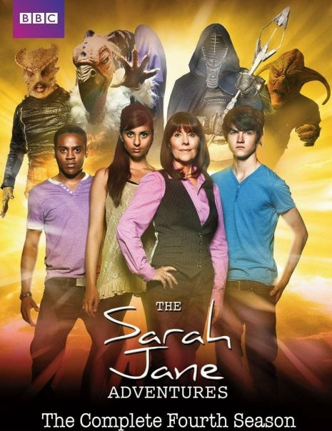

← Каталог портала
👩🦰Приключения Сары Джейн - 4 сезон (2010)

1-2. Кошмарный человек
(The Nightmare Man)
3-4. Хранилище тайн
(The Vault of Secrets)
5-6. Смерть Доктора
(Death of the Doctor)
7-8. Пустая планета
(The Empty Planet)
9-10. Затерянные во времени
(Lost in Time)
11-12. Прощай, Сара Джейн Смит
(Goodbye, Sarah Jane Smith)
1 сезон (2007)
|||
2 сезон (2008)
3 сезон (2009)
|||
4 сезон (2010)
5 сезон (2011)